SuperRent (Heavy Equipment Rental Website)
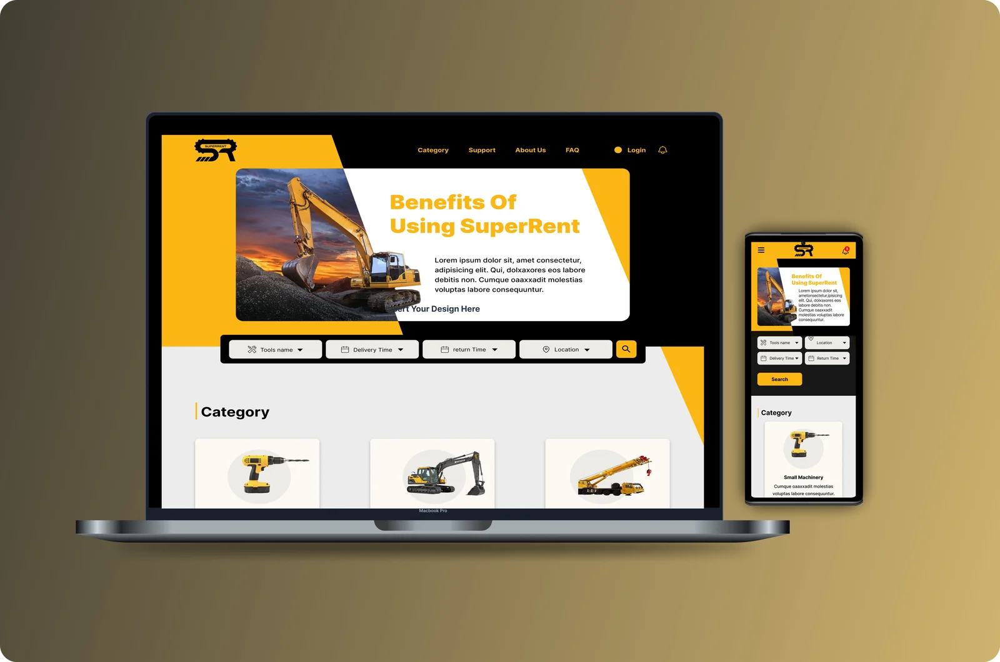
- Role
- UI Designer
- Timeline
- 3 weeks
- Tools
- Figma, Google Meet
SuperRent is a platform for renting heavy machinery in Canada. The client came to us with a proposal and a feature list, and asked us to focus on the visual design and the flows, making both modern and easy to use. I turned that structure into a clean, consistent interface, from search and booking to the customer and vendor dashboards, so a large number of screens feel like one product.
About Project
SuperRent is a web application for renting heavy machinery and equipment in Canada. For this project, the client had already defined the page structure, sections, and content requirements. My role was to take that structure and turn it into a clean, usable, and visually consistent UI.
Project Goals
- Create a User-Friendly Platform: Design a simple and intuitive user interface for all users, from beginners to professionals.
- Easy Search: Enable quick and accurate searches based on the type of equipment, desired time frame, and other important criteria.
- Online Booking: Provide the ability to book online and manage rentals efficiently.
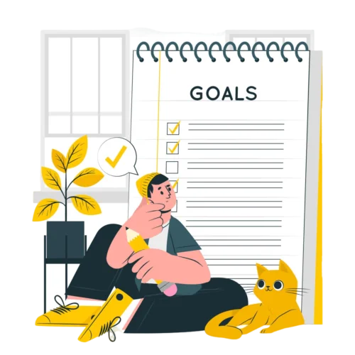
Project Features
- Advanced Filters: Allow filtering of products based on categories, brand, location, price, and rental duration.
- Product Details Page: Display product features, rental conditions, user reviews, Q&A, and the ability to compare with similar products.
- Online Support: Offer online support to address user questions and issues at any time.
- Dashboard Design: Create user-friendly dashboards for customers and vendors, tailored to the needs and specifications outlined in the proposal.
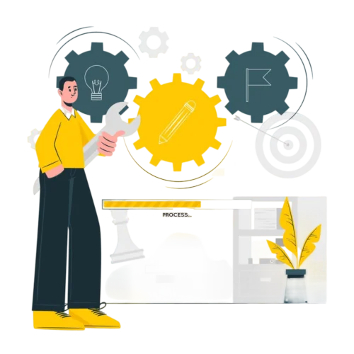
My Role
UI Designer (visual design & UI systemization)
The client provided the pages, sections, and required content; I was responsible for the interface design (layout, visual hierarchy, components, and interaction states) based on those requirements.
Design Process
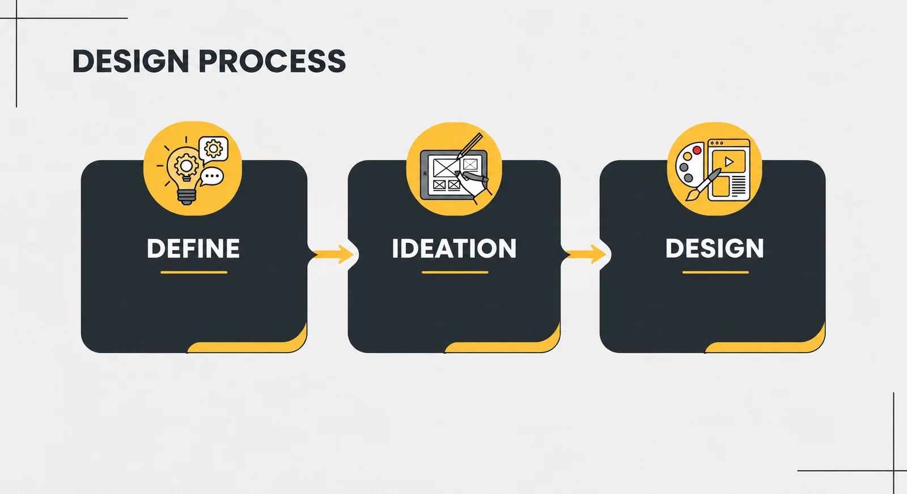
Define
Coordination Meetings with the Client
To ensure a clear understanding of the project and the client’s needs, we held four iterative meetings with the client. The goal of these meetings was to clarify the issues and challenges presented and to design based on the client’s requirements. During these meetings, the project was introduced and initial client needs were identified. Then, the details of the submitted proposal were thoroughly reviewed to define the project’s goals, limitations, and success criteria. Next, technical challenges were identified and proposed solutions were presented by the technical team. Finally, the requirements were finalized and the final design was confirmed based on the client’s needs and expectations.
Meeting Outcomes:
- Complete Understanding of Client Needs
- Definition of Goals and Success Criteria
- Identification and Resolution of Technical Challenges
- Final Design Approval
Ideation
Competitor Analysis
To enhance the design of this project, similar websites were thoroughly analyzed in terms of user interface design. This analysis included a detailed examination of features, strengths and weaknesses, and user experience of these websites. The goal was to identify best practices and innovative ideas to improve the UI design of SuperRent.
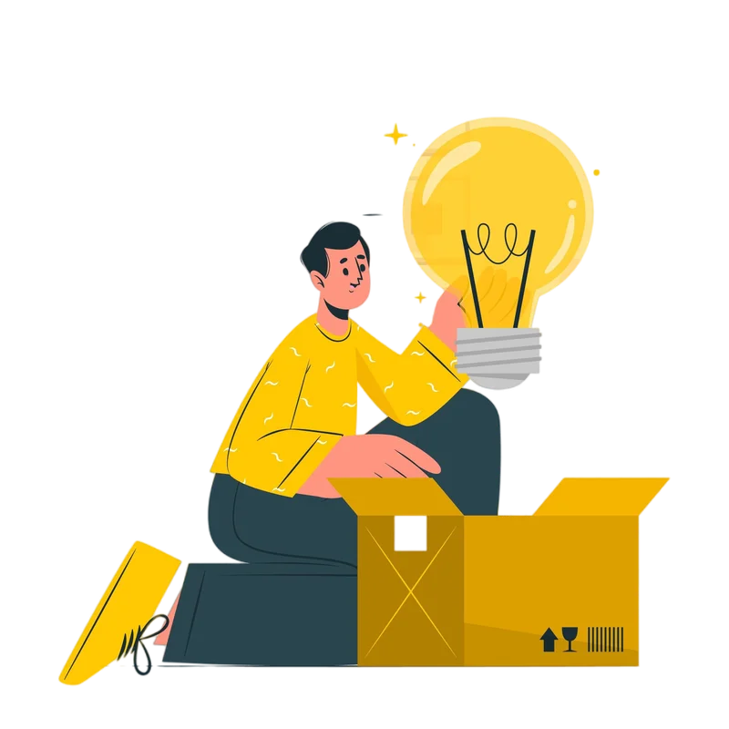
Analysis Steps
- Identifying Similar Websites: Selecting leading websites in the field of heavy machinery and tool rentals.
- Feature Review: Analyzing key features of each website, including search systems, filters, product detail pages, and booking processes.
- User Experience Evaluation: Assessing how users interact with the websites and identifying strengths and weaknesses in the user experience.
- Idea Collection: Extracting innovative ideas and best practices to enhance the UI design of SuperRent.
Examples of reviewed websites:
- https://dozr.com
- https://dayimrentals.com
- https://www.europe-construction-equipment.com
- https://www.hercrentals.com
What Carried into the Design
- Search first: Equipment type, delivery and return time, and location sit together in one search bar on the home page.
- Filters that stay in view: The product list keeps filters, applied filter chips, and sorting visible so users can narrow results quickly.
- Details that help people decide: The product page shows features, price, location, and rating up front, with a size comparison below.
- A short, clear booking flow: Information, confirmation, and payment, with the order summary visible at the confirmation step.
Some of the Low-Fidelity Wireframes
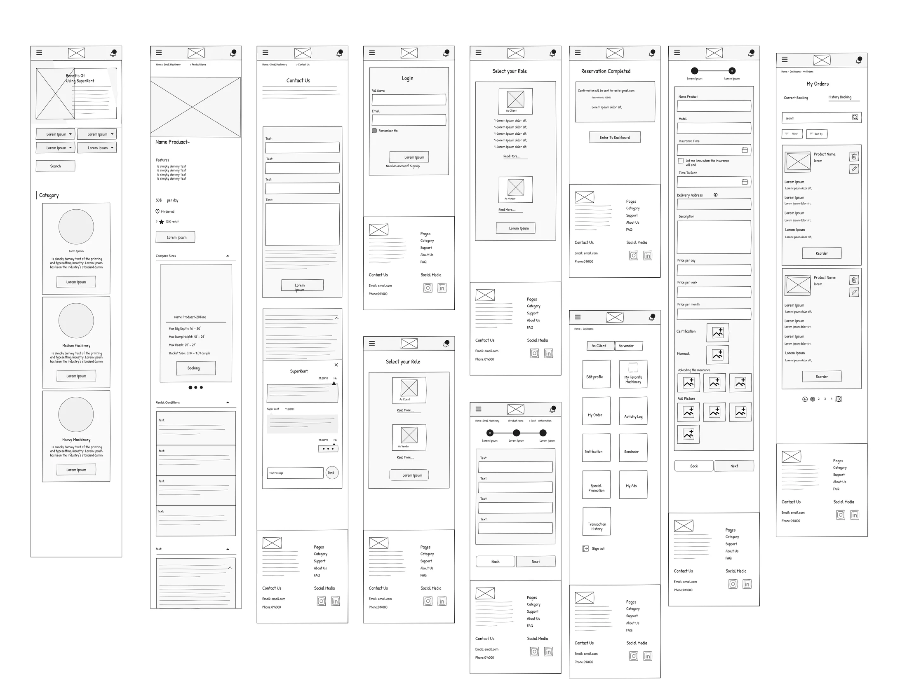
UI Design
- Home, product list, product detail, booking & payment flow
- Customer dashboard (orders, transaction history)
- Vendor dashboard (machine management, notifications, analytics and reports)
Focused on: consistent spacing & type scale, clear visual hierarchy for filtering/search, and reusable components across customer and vendor views.
Some of the Designed Pages
Homepage
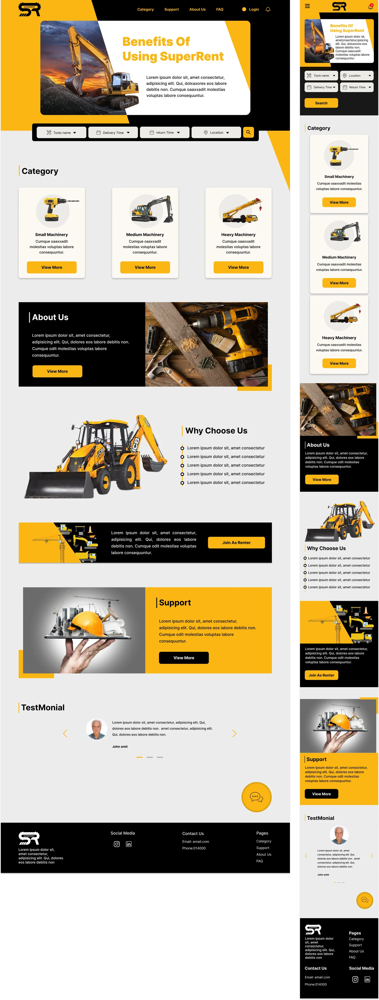
Product List
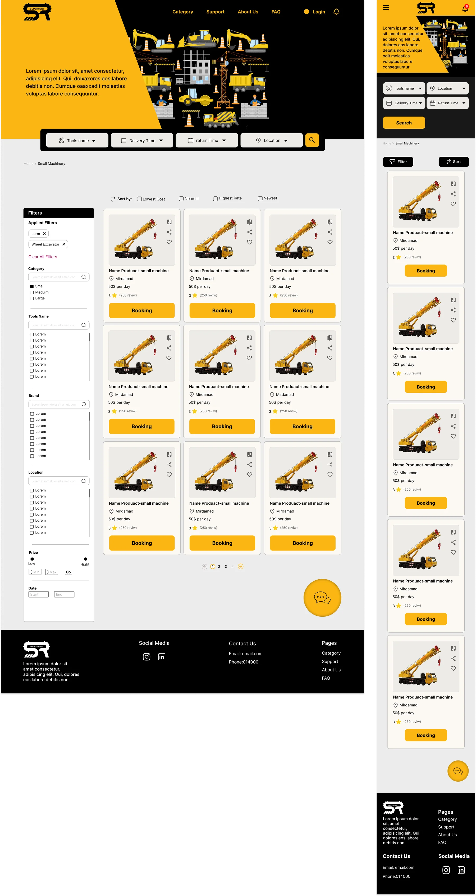
Product Page
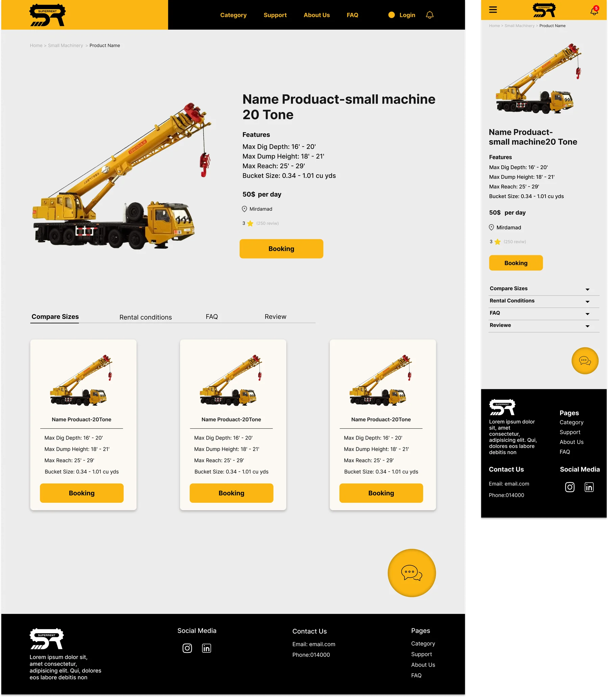
Contact Us
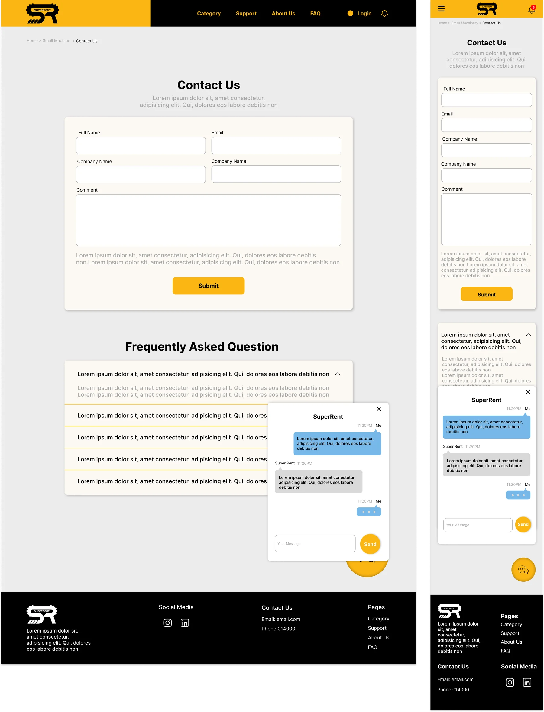
Confirmation
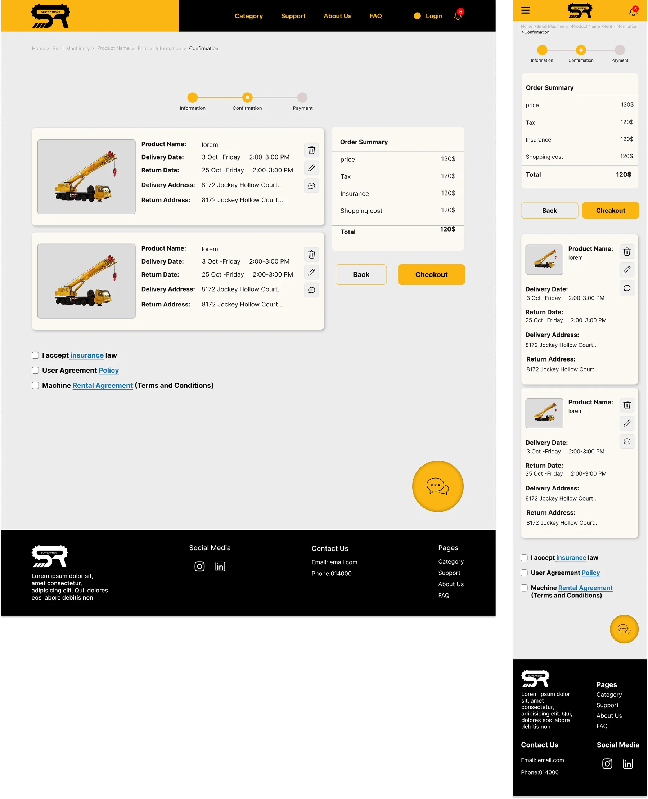
Payment
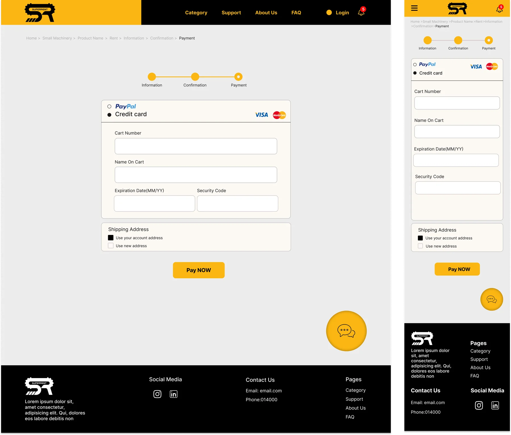
Some Vendor Dashboard Pages
Machine Management
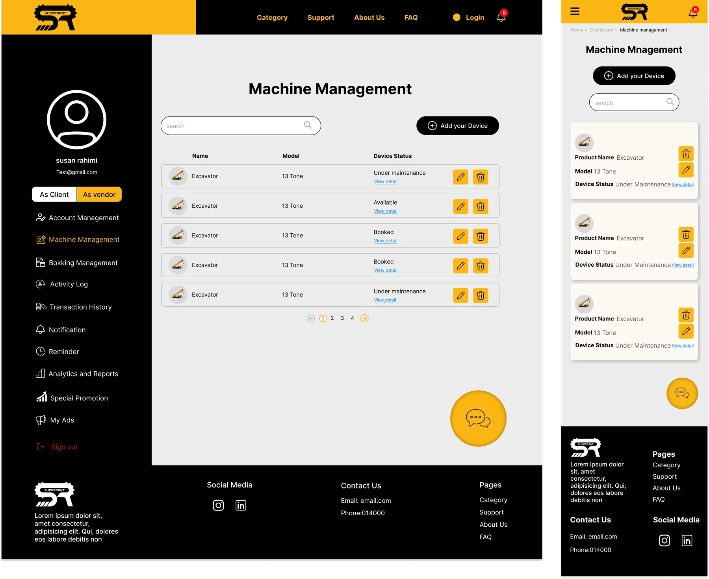
Add Your Device
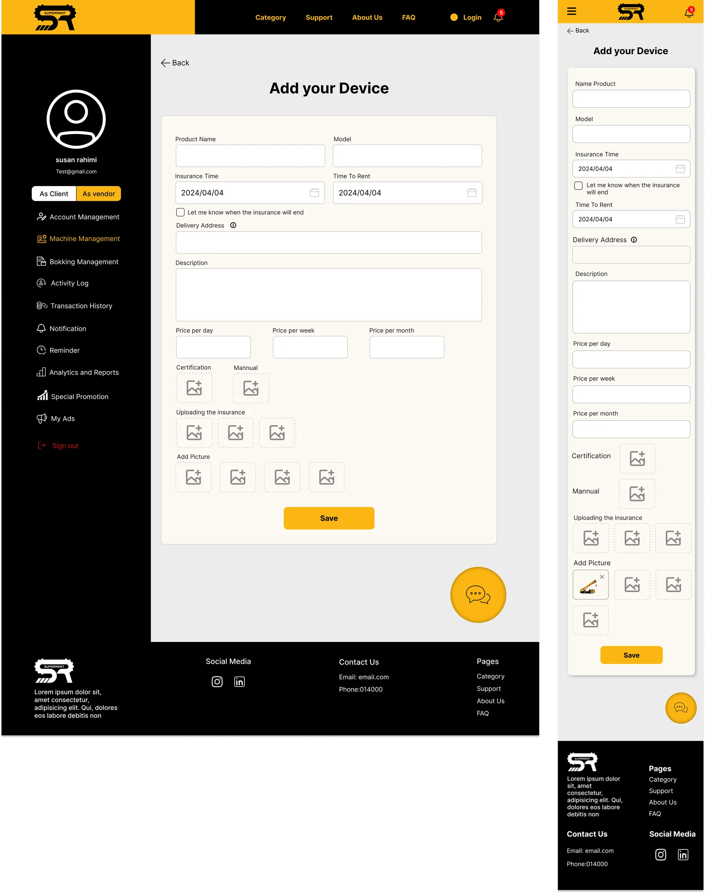
Notification
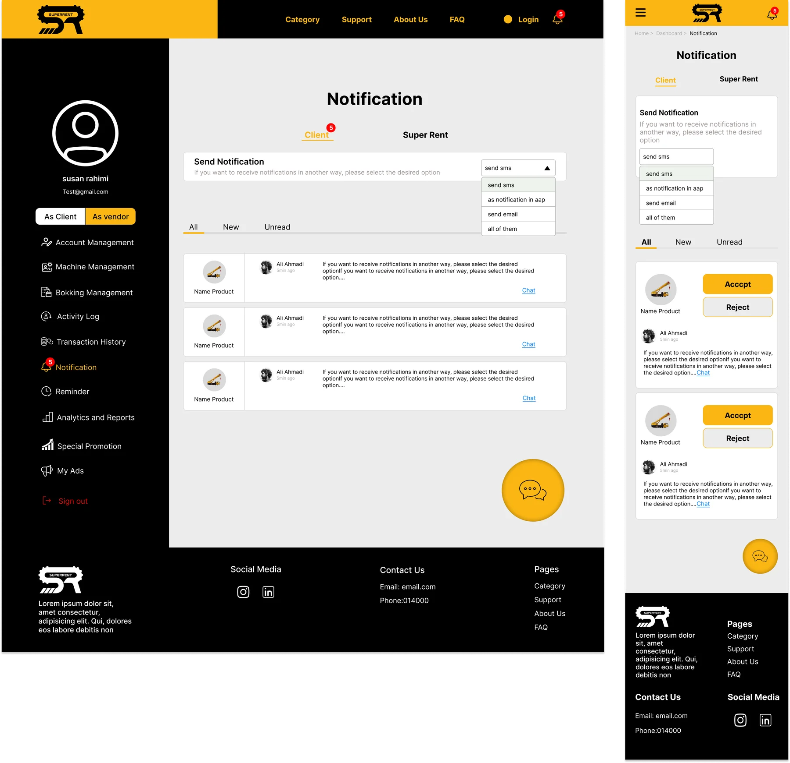
Analytics and Reports
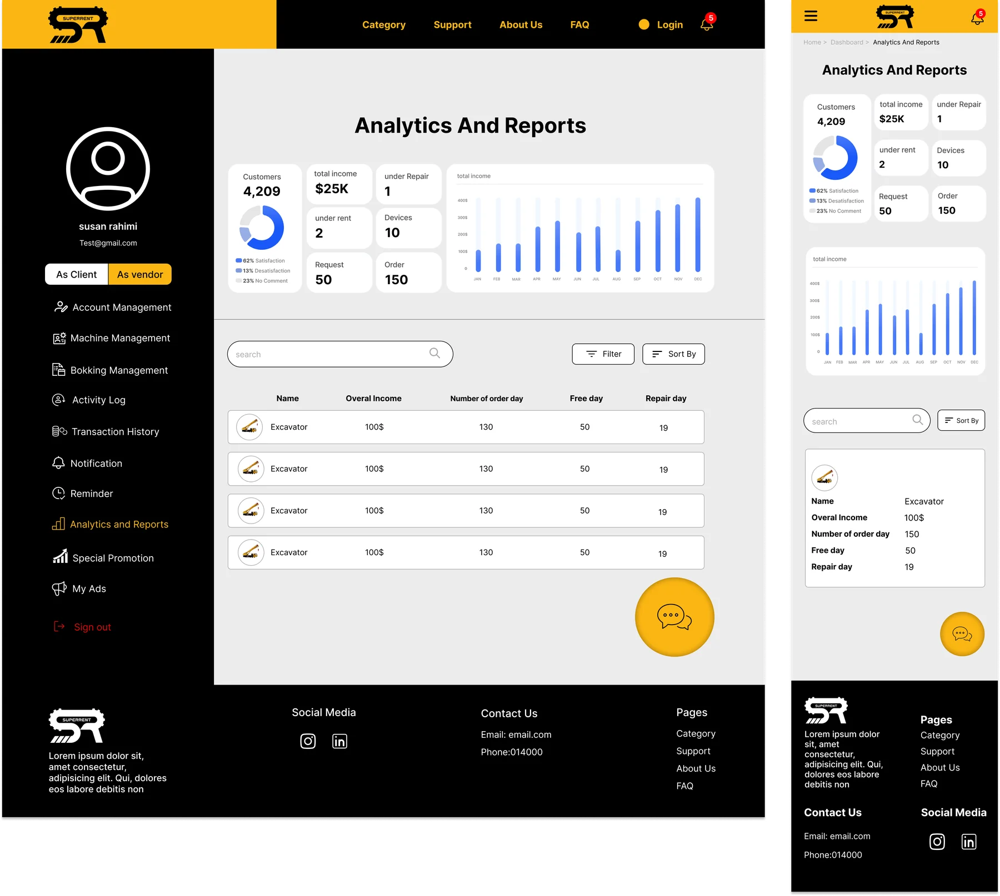
Reflection
Because the structure was client-defined, the main challenge was making a large number of predefined screens feel like one coherent system rather than a set of disconnected pages — solved through a shared component library and consistent visual language across the customer and vendor dashboards.